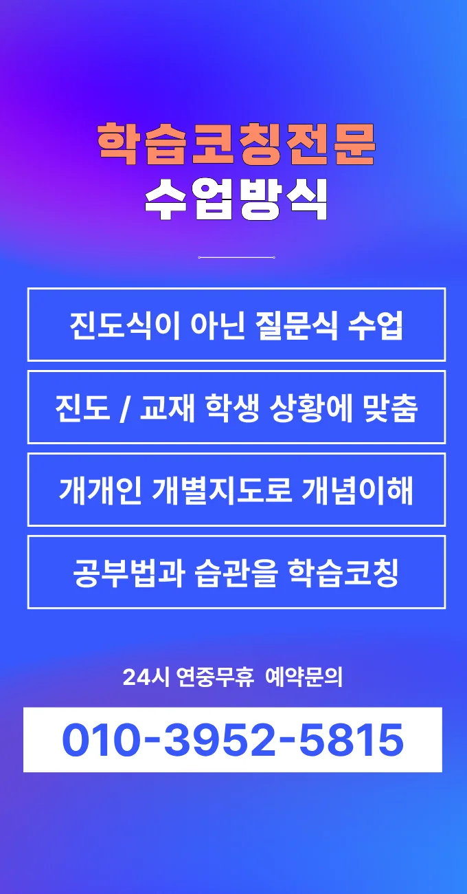

학부모님께서는 아이의 학습 효율을 높이기 위해 체계적인 선택 기준을 고민해요. 첫 번째 기준은 교육 프로그램의 투명성인데, 매월 발송되는 학습 리포트를 통해 진행 상황을 직접 확인할 수 있어요. 두 번째 기준은 강사의 전문성으로, 통계 기반 진단을 활용해 개인 맞춤 피드백을 제공해요. 세 번째 기준은 후평동 과학학원 환경인데, 주변 주거지역과 접근성을 고려해 도보 5분 이내에 위치한 곳을 선호해요. 마지막으로 비용 대비 효과를 검토할 때는 월별 강의료와 추가 서비스 비용을 비교해요. 이런 요소들을 종합하면 후평동 내에서도 다양한 선택지가 존재한다는 점을 알 수 있어요. 특히 확률과 통계 개념을 실제 생활 예시와 연결해 설명하는 프로그램은 사고력 향상에 큰 도움이 돼요. 보호자 상담 시간에 구체적인 목표 설정을 함께 논의하면서 장기적인 학습 로드맵을 설계해요. 이러한 과정을 통해 아이의 성장 가능성을 객관적으로 평가할 수 있어요.
후평동은 최근에 신축 아파트가 늘어나면서 학부모들의 교육 열기가 높아지고 있어요. 이 지역은 초중고등학교가 가까워 통학 시간이 짧아 아이들의 학습 효율이 좋다고 평가받고 있거든요. 주거 환경이 조용하고 녹지가 풍부해 집중력이 필요한 공부에 적합한 분위기를 제공해요. 후평동 과학학원가가 골고루 분포해 있어 선택의 폭이 넓으며, 지역 커뮤니티 모임을 통해 학습 정보 교류가 활발히 이루어져요. 부모님들 사이에 입소문이 퍼지면서 특정 과목 전문 후평동 과학학원들의 명성이 높아지고 있거든요. 이런 특성을 바탕으로 각 학년별 맞춤 교육 전략을 세우면 효과가 크게 나타나요. 또한, 주변 카페와 도서관이 있어 복습 공간을 쉽게 찾을 수 있어요.
우리 동네 학부모 사이에서 입소문이 난 와와학습코칭센터는 수업 중 점검표를 활용해 학습 진행 상황을 실시간으로 기록해요. 그 결과 학생 개개인의 약점 파악과 즉각적인 교정이 가능해요. 이곳은 특히 중등영어 250,000원, 고등영어1 300,000원이라는 합리적인 수강료로 체계적인 커리큘럼을 제공해요. 다음으로 최근 실수 유형 TOP3를 분석해 집중 교정과 동시에 단락쓰기 훈련을 진행해요. 마지막으로 학교별 기출문제 분석을 통해 출제 의도를 파악하고 문제 접근법을 지도해요
| 학원명 | 와와학습코칭학원 |
| 수강료 | 중등영어 250,000원 | 고등영어1 300,000원 |
CURRICULUM
수업 중에 학생이 질문을 모아 두었다가 전용 피드백 시간에 함께 검토해요. 이렇게 하면 놓친 부분을 체계적으로 짚어볼 수 있다고 해요. 매주 진행 상황을 학부모에게 문자로 전달해 가정에서도 학습 관리가 가능해요. 커리큘럼에는 고전 문학을 시대별로 나누어 배경과 주요 특징을 탐구하는 시간이 포함돼요. 또한 과학 실험 보고서 작성 연습을 통해 논리적 사고를 강화해요. 이런 구성은 학생이 스스로 학습 목표를 설정하고 달성하도록 돕는 데 효과적이라고 생각해요.
학생들은 내신 5등급에서 3등급으로 상승하려는 과정에서 흐름 위주 복습법을 간과하는 경우가 많아요. 목표에 따른 학습 집중 시간을 조절하지 못하면 효율이 떨어지고, 이는 성적 정체로 이어지게 돼요. 또한, 시험 직전 과도한 양을 한 번에 풀려는 습관이 스트레스를 유발하고 집중력을 흐트러뜨려요. 이러한 실수를 방지하려면 단계별 계획과 적절한 휴식이 필수적이에요.
와와후평동 과학학원의 학습 전략은 학생 개개인의 강점과 약점을 분석해 맞춤형 커리큘럼을 설계하는 데 초점을 맞추고 있어요. 수업 집중력을 높이기 위해 짧은 휴식 시간을 배치하고, 정서적 안정감을 제공하기 위해 상담 시간을 정기적으로 운영해요. 교과 평가와 수업 내용의 연계를 강화해 학습 성과를 객관적으로 측정하고, 성취 확인 없이 다음 단계로 넘어가지 않도록 관리해요. 이러한 체계적인 접근은 학습 효율을 극대화하고, 장기적인 성장 기반을 마련해 줘요.
고등학교 1학년으로 과제 수행은 성실하지만 응용 문제 풀이에 어려움을 느끼는 학생에게 특히 적합해요. 시험 형식으로 정리된 학습 내용을 습관화하지 않은 경우에도 체계적인 노트 정리와 문제 풀이 연습을 통해 실력을 빠르게 끌어올릴 수 있습니다. 또한 자기 주도 학습에 대한 기본 틀을 잡고 싶은 학부모님께도 큰 도움이 될 거예요.
우리 아이가 처음 방문했을 때 후평동 과학학원의 청결한 환경과 정돈된 책상이 눈에 들어왔어요. 담당 선생님이 아이의 현재 수준을 정확히 파악하고 맞춤 피드백을 제공해 주셔서 큰 도움이 되었어요. 모의고사 체험을 통해 실전 감각을 키우고 오답 정리집을 받아 시험 전날에 효율적으로 복습할 수 있었어요. 학부모 상담에서는 진로에 대한 새로운 가능성을 제시해 주셔서 고민이 해소됐어요. 전체적으로 아이의 집중 시간대에 맞춰 수업 시간을 조정해 주신 덕분에 학습 효율이 크게 상승했어요.